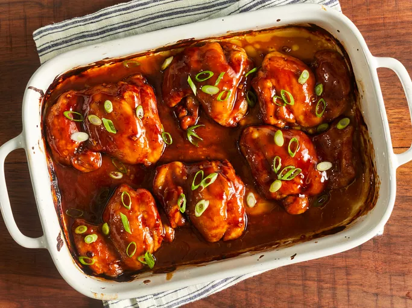

Teriyaki Chicken

Baked Teriyaki Chicken
This recipe will have your family screaming for more!
Ingredients
- Chicken
- Soy Sauce
- Sugar
- Vinegar
- Cornstarch and cold water
- Minced garlic
- Seasonings
Steps
- Set aside chicken.
- Combine rest of ingredients in a small saucepan over low heat.
- Place chicken in baking dish.
- Brush both side with the sauce.
- Bake in preheated oven for 30 minutes.
- Flip chicken and brush with sauce every 10 minutes until no longer pink and juices run clear.
- Serve hot and enjoy!
Home